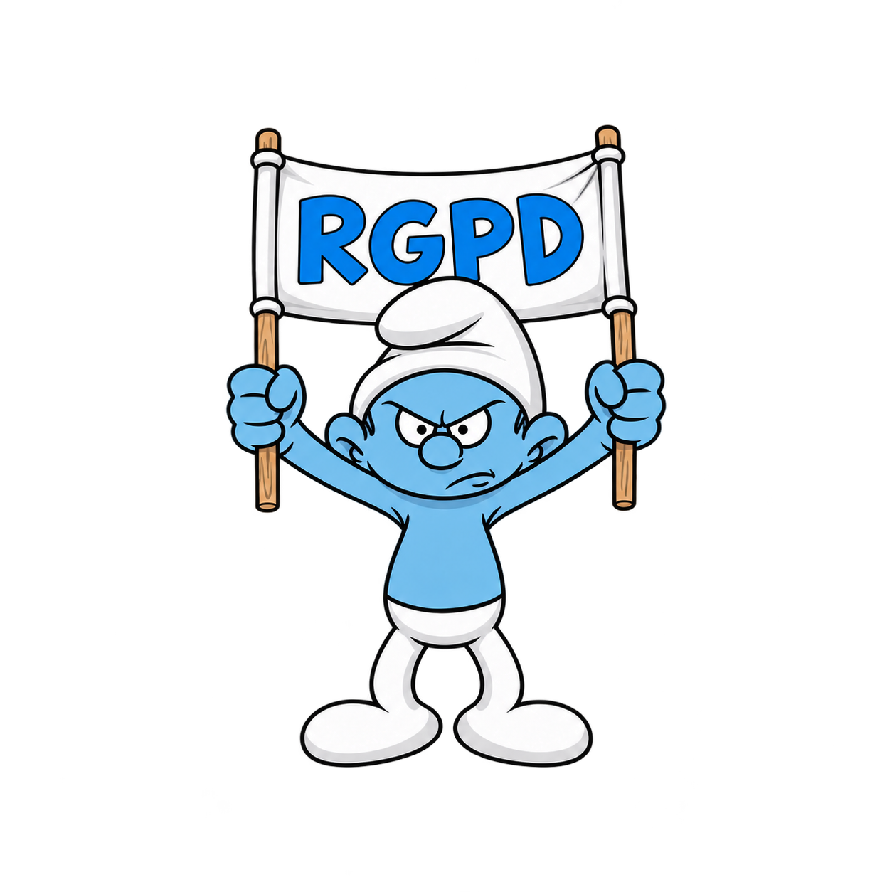
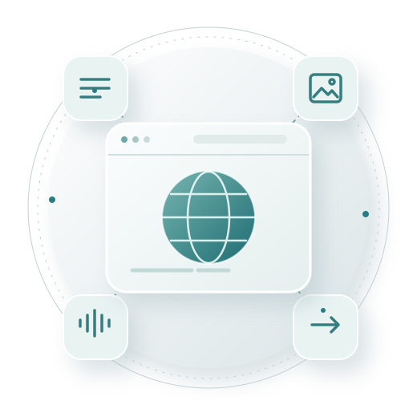

Chatbot generalista
Conversa, adapta y ayuda a crear materiales.
02 IA ONLINE
Explorar herramientas para transformar una necesidad docente en materiales útiles, revisados y listos para el aula.
Una aplicación online conecta nuestra petición con un servicio a través de internet.
La interfaz es lo que manejamos; la aplicación organiza funciones; el servicio recibe y procesa solicitudes; el modelo produce una salida a partir de entradas. Una aplicación puede usar varios modelos o herramientas.
Al escribir o subir un archivo podemos enviarlo a un proveedor externo. Revisa la necesidad, el destinatario, las condiciones y la autorización del centro. Usa contenido propio, público, autorizado o ficticio.
Una misma aplicación puede combinar funciones de conversación, búsqueda o generación de imágenes y audio. Su funcionamiento y las condiciones de uso dependen del servicio y de la cuenta utilizada.

Ya hemos visto los criterios de datos y privacidad. Tenlos presentes antes de escribir información o subir archivos a cualquier servicio online.

01 / 13 UNA HERRAMIENTA PARA CADA TAREA
La herramienta adecuada depende de lo que quieres hacer y de sus condiciones de uso.
Conversa, adapta y ayuda a crear materiales.
Localiza información y ofrece enlaces a fuentes.
Aporta controles para una tarea concreta.
Las categorías se solapan: algunos chatbots también buscan en internet.
02 / 13 PEDIR, REVISAR Y AJUSTAR
Llamamos prompt a la petición o instrucción que escribimos a una IA para obtener una respuesta.
Una estructura útil puede aclarar cinco aspectos:
Piensa antes de pedir: una instrucción clara puede evitar correcciones innecesarias y ayudar a aprovechar los límites de tu cuenta.
03 / 13 RETOCAR, ADAPTAR Y CREAR
La IA generativa puede ser una buena ayuda para escribir, revisar y transformar textos.
Podemos trabajar de tres formas, según lo que necesitemos:
También podemos: resumir, traducir, cambiar el tono o la extensión, transformar una noticia en un guion de radio, extraer ideas y preparar preguntas.
En cada caso, compara el resultado con el propósito y adapta las instrucciones a lo que quieres conseguir.
04 / 13 DE LA RESPUESTA AL DOCUMENTO
La respuesta del chatbot se puede recuperar de varias maneras:
Comprueba que la salida conserva títulos, listas, fórmulas y enlaces antes de compartirla.
05 / 13 UNA PREGUNTA, VARIAS FUENTES
01 BÚSQUEDA NORMAL
Pregunta → respuesta breveResuelve una duda concreta o localiza un dato. Si la búsqueda web está activa, puede ofrecer enlaces, pero no necesariamente explora el tema de forma amplia.
02 INVESTIGACIÓN PROFUNDA
Plan → varias fuentes → síntesisDescompone la pregunta, encadena búsquedas y prepara un informe con citas. Requiere más tiempo y suele consumir más cuota.
«Las citas orientan la comprobación; leer la fuente permite valorar la respuesta.»
06 / 13 DEL DISEÑO AL BANCO DE PREGUNTAS
01 DISEÑAR Y VALIDAR
Primero, la preguntaDefinir qué se evalúa, el nivel, la respuesta correcta y distractores plausibles requiere dominio del contenido y criterio docente. La IA puede proponer un borrador; tú compruebas su calidad. Para formular la petición, vuelve a Construir una petición · 03/13.
02 DAR FORMATO E IMPORTAR
Después, el archivoCon las preguntas revisadas, solicita la sintaxis que acepta el banco de preguntas. El formato de importación permite trasladarlas a distintos espacios educativos compatibles sin introducirlas una por una.
«El formato facilita la importación; el criterio docente determina la calidad de la pregunta.»
07 / 13 HACER VISIBLES LAS RELACIONES
¿Qué relación quieres hacer visible?
01 MAPA JERÁRQUICO
Ordena conceptos por nivelesParte de una idea principal y la despliega en temas y subtemas.
02 DIAGRAMA
Muestra pasos y relacionesRepresenta procesos, decisiones, secuencias o conexiones entre elementos.
«Selecciona primero las ideas; después representa el esquema y comprueba que las relaciones sean correctas.»
08 / 13 IMÁGENES CON UN PROPÓSITO
Antes de generar, pregúntate: ¿para qué necesita el alumnado esta imagen?
«La imagen debe responder a una necesidad didáctica: ser atractiva no basta.»
09 / 13 DE LOS APUNTES AL VÍDEO
De apuntes o una idea a una presentación; del guion a un vídeo breve cuando aporte algo.
Una presentación puede partir de unos apuntes o un esquema. Un vídeo puede combinar guion, escenas, voz y subtítulos.
Elige el formato por su aportación didáctica y comprueba las condiciones, límites y costes del servicio.
10 / 13 DEL TEXTO A LA VOZ Y LA MÚSICA
La IA puede crear audio por dos caminos: locutar un texto o componer una canción.
Un sintetizador lee el guion con una voz, un idioma y un ritmo elegidos. El chatbot puede ayudarte a preparar el texto; la herramienta de voz produce el audio.
Un modelo musical compone la música y la voz a partir de una letra, un estilo y otras indicaciones. Es un proceso distinto de la locución.
«Escucha y revisa el resultado; conserva también el texto para acompañar el audio.»
11 / 13 TAREA, EVIDENCIAS Y RÚBRICA
La IA relaciona materiales y propone borradores; el juicio docente mantiene el rumbo.
Contenidos, criterios y actividades.
Una oportunidad para demostrar ese aprendizaje.
Prueba, lista, escala o rúbrica alineada con la tarea.
«La evaluación es coherente cuando valora lo que se enseñó y se pidió demostrar.»
12 / 13 ANALIZAR CON CRITERIO Y CUIDADO
La IA puede relacionar datos y señalar patrones, pero solo después de recibirlos.
«Un patrón es una pista para revisar, no una conclusión sobre una persona.»
13 / 13 DE LA NECESIDAD AL RECURSO
El punto de partida es lo que el grupo debe aprender; después decidimos qué herramienta puede ayudar.
Propósito, tareas y evidencias.
Solo las herramientas que aportan algo.
Fuentes, datos, derechos y accesibilidad.
«El docente debe poder explicar por qué creó el recurso y cómo comprobó el resultado.»
El contenido original de este recurso es obra de David Rodríguez y se comparte bajo la licencia CC BY-NC-SA 4.0.
Se permite compartir y adaptar citando la autoría, enlazando la licencia e indicando los cambios, sin uso comercial. Las adaptaciones deben distribuirse bajo la misma licencia o una compatible.
Los materiales de terceros pueden tener derechos y condiciones propias.